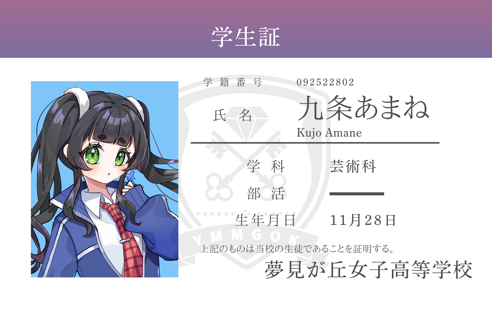

自己紹介ノート

帰宅部
ここだけの話、部活動に興味はあるらしい。
隠された一面
目に映る景色が真実とは限らない。
黄昏は、ふいに足元をさらっていく。
黄昏は、ふいに足元をさらっていく。
キャラクター詳細
年齢
15歳
血液型
AB型
身長
155cm
部活動
帰宅部
委員会
図書委員
趣味
読書
得意科目
英語・音楽
好きな花
勿忘草・紫陽花
将来の夢
特になし
初めまして、九条あまねだよ。皆からは「あまねちゃん」って呼ばれてるよ！
えっ、仲良くしてくれるの…？本当…？
学校生活
うぅーん…普通の学生生活を送ってる…よ！強いて言うなら…放課後に1人で読書するのが好き、かな？
最近『これで完璧！友達との会話術2』を読んでるよ、読む？
『これで完璧！友達との会話術2』について
毎日この本を持って学校に来てるよ！様々なシチュエーションへの対応が書かれていてとっても参考になるんだ…！
もちろん、1も持ってるよ！噂によると、今度3が出るみたいなの！楽しみ！
自己紹介ノート
ホラー布教部
夢見が丘女子高等学校には、
"あったりなかったりする部活"の噂がある。
その名も――ホラー布教部。
部長に会えば、昔からの友人のように感じるのに、
いなくなると、誰もその存在を思い出せなくなるという。
"あったりなかったりする部活"の噂がある。
その名も――ホラー布教部。
部長に会えば、昔からの友人のように感じるのに、
いなくなると、誰もその存在を思い出せなくなるという。
バッドエンドも好き
キャラクター詳細
年齢
15歳
血液型
B型
身長
150cm
部活動
ホラー布教部
委員会
美化委員
趣味
映画鑑賞
得意科目
国語
好きな花
金木犀・鈴蘭
将来の夢
世界一周旅行
初めまして！クラスメイトからは「のばらちゃん」と呼ばれています！よろしく～
学校生活
ホラー布教部の部長としてホラーの布教に心血を注いでいます！部員募集中！
ホラーへの想い
ホラーは怖いだけじゃなく、生まれた理由や怖いと感じる理由など、様々な要因が折り重なっています！是非そんなところにも目を向けてくださいね～